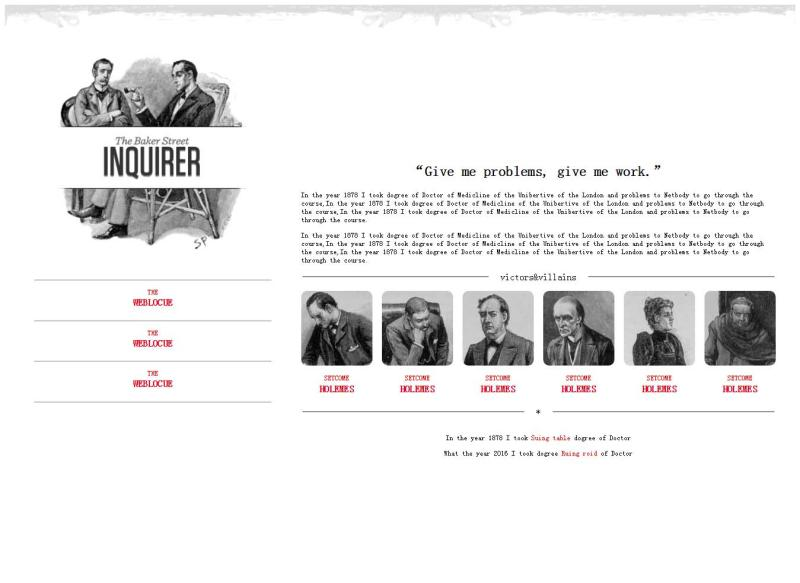
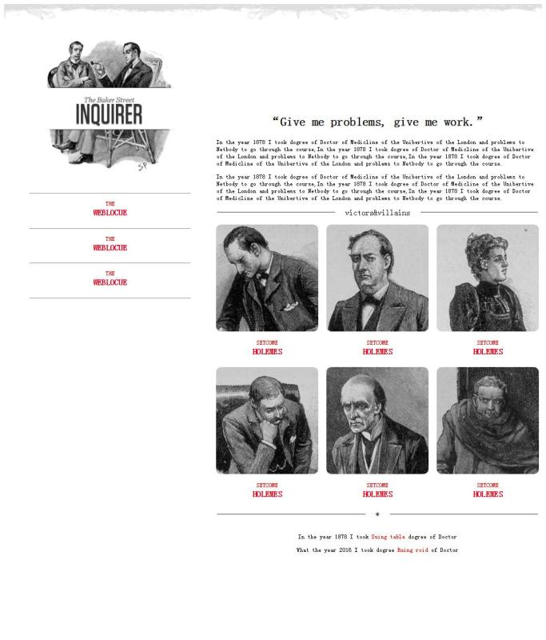
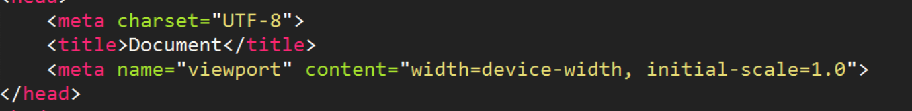

我个人的理解就是一种让网页可以适应各种不同屏幕大小或者分辨率的设备的办法
举个例子↓
 这是同一个网页在两个不同大小的屏幕上显示的效果
先检测设备的视口大小，然后加载合适的样式
因此，我们需要创建一个包含适应各种设备尺寸样式的 CSS
（这里我引用了runoob.com提供的CSS文件，同样来自上面那个网址，放在下方供大家下载使用）
点击下载CSS文件在我们的网页中引用这个CSS文件
接下来，我们需要在网页的头部，也就是head标签里设置一个meta标签,案例↓，（通常都是这样设置的）
width是设置宽度用的，没什么好说，设置成device-width表示使用原始的分辨率
initial-scale用来设置视口最初的比例。1.0表示设备的原始宽度